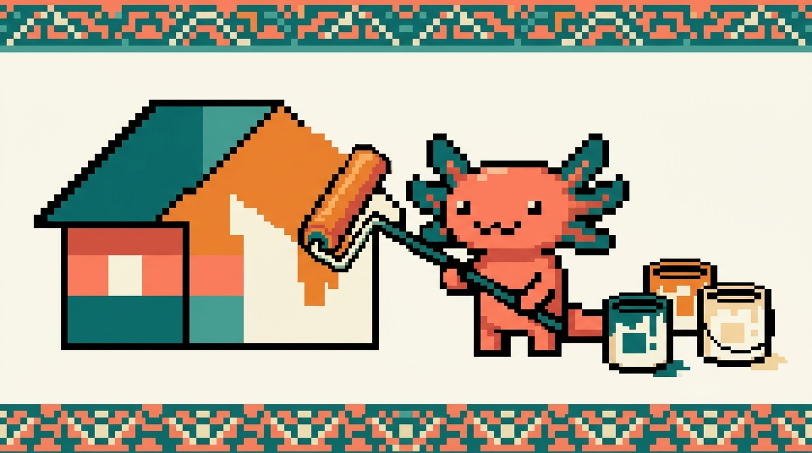

Módulo 02 — CSS

Objetivo del módulo: aprender CSS, el lenguaje que controla cómo se ve una página: colores, tipografías, tamaños, espacios y la disposición de los elementos. Al terminar, podrás dar órdenes precisas como "este fondo en
#1B6B6B, este texto a18px, esta tarjeta con16pxde espaciado interno y esquinas de12px" — exactamente la habilidad que buscabas.
Si HTML era el esqueleto de la casa, CSS es la pintura y la decoración. Es el módulo donde tu sitio pasa de verse "feo y plano" a verse como tú quieres.
¿De dónde sale esto en TUS proyectos?
tunal-digital/sitio-web/styles.csses CSS "puro" (26 KB de estilos): el diseño "Tech Atardecer" de tu sitio. Es nuestro ejemplo principal.- En
RachaSimpleyFaroel CSS se escribe con Tailwind (una forma abreviada de CSS que verás más adelante); entenderlo requiere primero dominar el CSS normal, que es justo esto.
¿Qué vas a poder hacer al terminar?
- Conectar CSS a tu HTML y entender la sintaxis
selector { propiedad: valor; }. - Elegir colores con precisión (hexadecimal, RGB, HSL) y entender las unidades (
px,rem,%). - Controlar tipografías, tamaños y espaciados.
- Dominar el modelo de cajas (la base de TODO el diseño web).
- Acomodar elementos con Flexbox (filas y columnas que se adaptan).
- Hacer que tu página se vea bien en móvil y escritorio (responsive).
Capítulos
| # | Capítulo | Qué cubre |
|---|---|---|
| 01 | ¿Qué es CSS? | Cómo se conecta al HTML, sintaxis, selectores |
| 02 | Colores, unidades y tipografía | Hex, RGB, HSL, px/rem/%, fuentes |
| 03 | El modelo de cajas | content, padding, border, margin |
| 04 | Layout con Flexbox | Filas/columnas flexibles, alineación |
| 05 | Diseño responsive | Media queries, mobile-first, viewport |
Se publican por tandas. Empieza por el 01.
➡️ Empieza por Capítulo 01 — ¿Qué es CSS?.